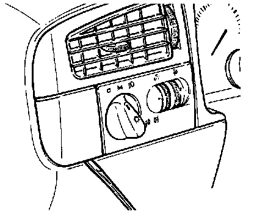

Headlamp Switch: Service and Repair
NOTE: Light switch -E1- shown in images differs slightly from light switch installed in vehicle.Removing:

- Carefully pry off trim piece on left side of light switch.

- Press switch release button on side of switch.
- Pull light switch from instrument panel.
- Remove switch connector and remove light switch.
Installing:
- Install light switch connector.
- Install light switch into instrument panel.
- Install left trim piece.